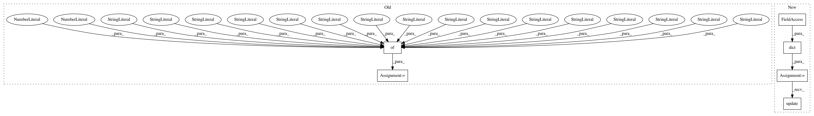

ef24657bab3db9373888da858308c0cde5295c6d,finetune/base_models/bert/model.py,DocRep,DocRep_1,#,212
Before Change
class DocRep(_BaseBert):
encoder = RoBERTaEncoderV2
featurizer = bert_featurizer
settings = {
"lm_type": "mlm",
"n_embed": 768,
"n_epochs": 32,
"batch_size": 8,
"n_heads": 12,
"n_layer": 12,
"act_fn": "gelu",
"lr_warmup": 0.1,
"lr": 1e-4,
"l2_reg": 0.1,
"epsilon": 1e-8,
"bert_intermediate_size": 3072,
"bert_use_pooler": False,
"context_injection": True,
"reading_order_removed": True,
"context_channels": 192,
"base_model_path": os.path.join("bert", "doc_rep_v1.jl"),
"crf_sequence_labeling": False,
"context_dim": 4,
"default_context":{
"left": 0,
"right": 0,
"top": 0,
"bottom": 0,
},
"use_auxiliary_info": True
}
required_files = [
{
"file": os.path.join(FINETUNE_BASE_FOLDER, "model", "bert", "doc_rep_v1.jl"),
"url": urljoin(BERT_BASE_URL, "doc_rep_v1.jl"),
After Change
class DocRep(_BaseBert):
encoder = RoBERTaEncoderV2
featurizer = bert_featurizer
settings = dict(RoBERTa.settings)
settings.update(
{
"lr": 1e-4,
"context_injection": True,
"reading_order_removed": True,
"context_channels": 192,
"crf_sequence_labeling": False,
"context_dim": 4,
"default_context":{
"left": 0,
"right": 0,
"top": 0,
"bottom": 0,
},
"use_auxiliary_info": True,
"low_memory_mode": True,
"base_model_path": os.path.join("bert", "doc_rep_v1.jl"),
}
)
required_files = [
{
"file": os.path.join(FINETUNE_BASE_FOLDER, "model", "bert", "doc_rep_v1.jl"),
"url": urljoin(BERT_BASE_URL, "doc_rep_v1.jl"),
In pattern: SUPERPATTERN
Frequency: 3
Non-data size: 6
Instances
Project Name: IndicoDataSolutions/finetune
Commit Name: ef24657bab3db9373888da858308c0cde5295c6d
Time: 2020-05-14
Author: benlt@hotmail.co.uk
File Name: finetune/base_models/bert/model.py
Class Name: DocRep
Method Name: DocRep_1
Project Name: cmu-db/ottertune
Commit Name: e676433ece6bc034beb9eedaeb19fc5b786dc565
Time: 2019-10-03
Author: dvanaken@cs.cmu.edu
File Name: server/website/tests/test_views.py
Class Name: SessionViewsTests
Method Name: test_edit_basic_session_ok
Project Name: cmu-db/ottertune
Commit Name: e676433ece6bc034beb9eedaeb19fc5b786dc565
Time: 2019-10-03
Author: dvanaken@cs.cmu.edu
File Name: server/website/tests/test_views.py
Class Name: SessionViewsTests
Method Name: test_create_tuning_session_ok